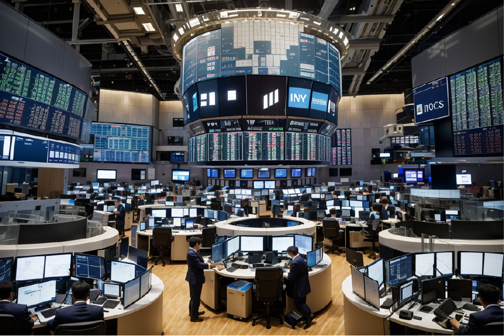

Mercados Globales Alcanzan Nuevos Máximos en una Semana de Ganancias Récord
Los mercados financieros globales experimentaron ganancias históricas debido a señales de recuperación económica y políticas monetarias flexibles. Sin embargo, existe preocupación por la volatilidad y las valoraciones actuales, incluyendo el mercado de criptomonedas.
Los mercados financieros globales han vivido una semana de ganancias históricas, con índices bursátiles alcanzando nuevos máximos en múltiples regiones del mundo. Las señales de una recuperación económica sostenida y las expectativas de una flexibilización de las políticas monetarias han impulsado el optimismo de los inversores.
En Wall Street, el índice S&P 500 superó los 5,000 puntos por primera vez, mientras que el Dow Jones Industrial Average registró un impresionante aumento del 4%. Las ganancias también se extendieron a Europa, donde el índice Euro Stoxx 50 subió un 3.5% y el FTSE 100 de Londres alcanzó su nivel más alto desde 2019. Asia no se quedó atrás, con el Nikkei de Japón subiendo un 5% durante la semana.
El entusiasmo de los inversores se atribuye en parte a la fuerte recuperación económica en curso, respaldada por la reapertura de la economía y el avance en la vacunación contra la COVID-19. Además, se espera que los bancos centrales continúen con políticas monetarias flexibles para respaldar la recuperación económica.
No obstante, algunos analistas advierten que esta euforia del mercado también ha llevado a un aumento de la volatilidad y a ciertas preocupaciones sobre la sostenibilidad de las valoraciones actuales. El mercado de criptomonedas también ha experimentado fuertes fluctuaciones, lo que ha llevado a un debate continuo sobre su papel en el panorama financiero global.